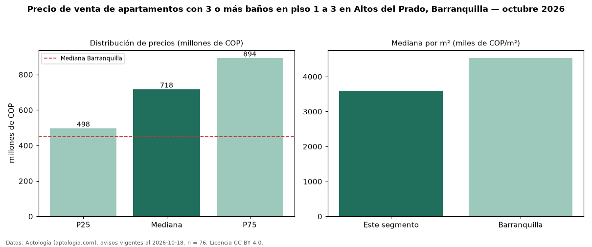

Precio de venta de apartamentos con 3 o más baños en piso 1 a 3 en Altos del Prado, Barranquilla — octubre 2026
Con 76 avisos vigentes, el precio mediano de apartamentos con 3 o más baños en piso 1 a 3 en venta en Altos del Prado, Barranquilla es COP 718 millones. Eso es 8 % menos que la mediana de los apartamentos con 3 o más baños en venta de Altos del Prado (COP 780 millones, n = 371); este segmento reúne el 20 % de esos avisos. Por metro cuadrado, la mediana es COP 3,60 millones/m² (n = 70), 8 % por debajo de los apartamentos con 3 o más baños en venta de Altos del Prado (COP 3,90 millones/m²). El área mediana anunciada es 186 m². El segmento con más oferta es el de 3 o más habitaciones (72 avisos, mediana COP 730 millones). La administración mediana declarada es COP 1,10 millones al mes (n = 62). El estrato más frecuente es 6 (58 % de los avisos con estrato). La mitad central de los avisos va de COP 498 millones a COP 894 millones (razón 1,8), una dispersión moderada. Datos: Aptología (aptologia.com), CC BY 4.0 — https://www.aptologia.com/venta/barranquilla/altos-del-prado. Archivos: PDF, CSV con las cifras y gráfica PNG.

| Avisos únicos | 76 |
|---|---|
| Percentil 25 | COP 497.500.000 |
| Mediana | COP 717.500.000 |
| Percentil 75 | COP 893.500.000 |
| Mediana por m² | COP 3.600.000 |
Fuente: avisos vigentes de portales inmobiliarios recopilados por Aptología, deduplicados (mínimo 30 avisos únicos por celda). Precios pedidos, no cerrados. Fecha: 2026-10-18.